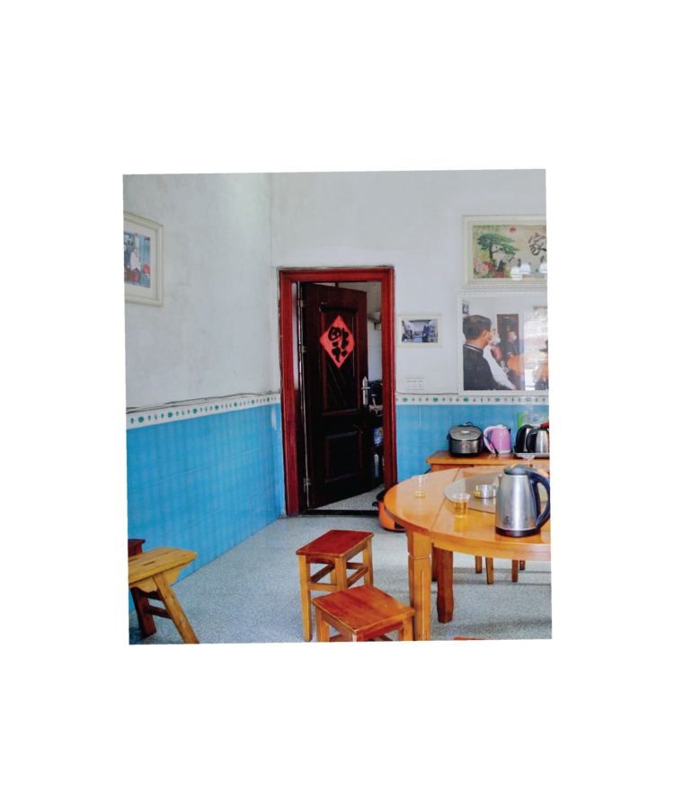

nánwàng de yī tiān
SHANGHAI SEMINARY presents nánwàng de yī tiān, a solo exhibition by Peixuan Ouyang, featuring an installation of audio-visual materials collected and developed between 2020 and 2026, Beijing and the Yao ethnic village of Shazhou in Rucheng County, Chenzhou City, Hunan Province, the People’s Republic of China.
難忘的一天
An Unforgettable Day
曲 湯尼 Composition by Tony Tang
詞 孫儀 Lyrics by Sun Yi
編曲 陳志遠 Arrangements by Chen Chih-Yua
唱 鄧麗君 Vocals by Teresa Teng
不知你從哪裡來，
Do not know where you came from
也不知到哪裡去，
nor where you are going
我們偶然相識，
We met by chance
就從這天起。
and this day was the beginning…
不知你為誰而來,
Do not know for whom you came
也不知幾時歸去，
nor when you will return
我們一見如故，
At first sight we felt like having known each other forever
陌生變知己。
strangers became confidants
流水一樣的情愫，
Feelings flowing like running water
純潔的象朵漣漪，
as pure as a ripple
金石一樣的愛心，
A loving heart like a golden stone
讓它深深埋在心裡，
let it be deeply buried in our minds
這難忘的一天，
This unforgettable day
這難忘的一天，
This unforgettable day
值得我們一生留戀回憶。
is worth cherishing and remembering for our lifetime
Peixuan Ouyang was born in Chenzhou, China, in 1996 and arrived in the Midwest of the United States of America in 2014. They hold a B.A. from Carleton College and an M.F.A. from the School of the Art Institute of Chicago. They currently live and work on the unceded lands of the Council of Three Fires—the Ojibwe, Odawa, and Potawatomi Nations.
This project was supported, in part, by a Foundation for Contemporary Arts Emergency Grant.